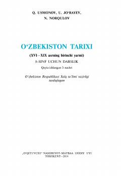

OT8-sinflar uchun O'zbekiston tarixi fanidan rasmiy darslik.
Ushbu 8-sinf darsligida O'zbekistonning XVI asrdan XIX asrning o'rtalarigacha bo'lgan ijtimoiy-siyosiy, iqtisodiy va madaniy hayoti tarixi yoritilgan. Darslikda temuriylar davrining inqirozi, shayboniylar sulolasi hukmronligi hamda xonliklarning tashkil topishi va ularning ichki siyosiy ahvoli haqida batafsil ma'lumot beriladi.